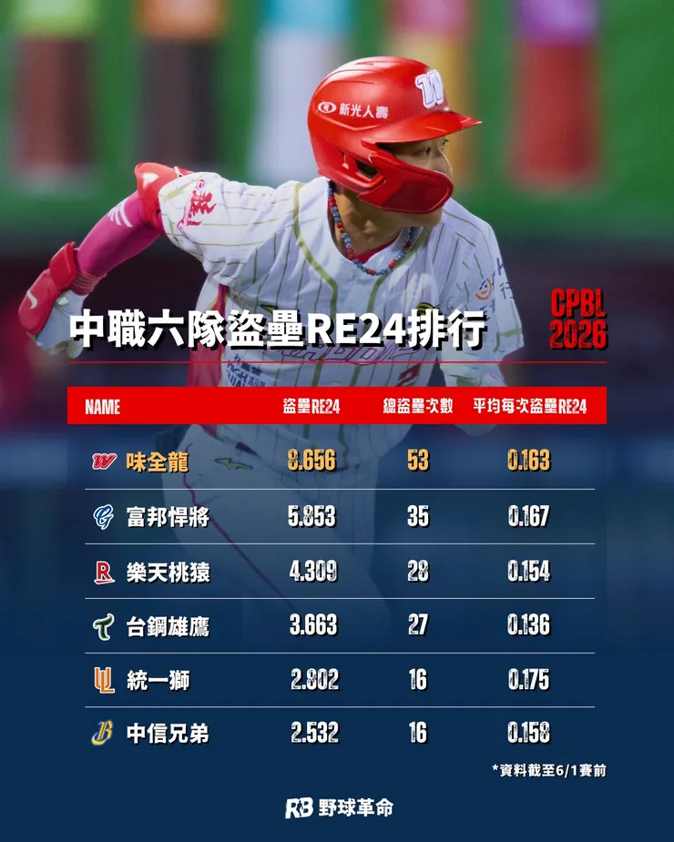

為增加棒球觀賞性及進入奧運項目的合理性，MLB近年積極調整規則來增加棒球人口，其中包含用投球秒數限制，來避免球賽時間過長；壘包加大，來增加盜壘誘因...等等。CPBL為了接軌國際，大部分也都跟進採用，其中壘包加大的效應，在反應在今年味全龍的盜壘成功次數上，與其他隊伍有著顯著的差異。
壘包間的紅色狂龍再現
味全龍目前以將近七成的勝率穩居第一，跟往年相比，投手陣容依舊出色，但有別於去年被笑稱"goal for one"的貧打，透過大幅拉開與其他隊伍在盜壘成功次數的差距，得分硬是擠進前段班。其中張政禹、郭天信、李凱威加起來32次的盜壘成功，已經超越大部分球隊的團隊盜壘。日前張政禹更是明目張膽的盜本壘成功，更讓球迷看得血脈賁張。
盜壘成功的數據說明了味全龍第一名的原因
味全龍於2025年就已經展現過人的壘間破壞力，團隊100次盜壘成功，獨居六隊之冠。今年在壘包加大後更是肆無忌憚的，在不到三分之一的賽季裡，就已場均 1.2 次、八成的成功率，跑出53次盜壘成功，讓球隊的壘包價值大幅「升級」。
野球革命就不同壘包與出局情境計算每一次盜壘，能夠帶來多少得分期望值（RE24）的增加如下圖。野球革命的進階數據指出，味全憑藉盜壘，至今已多得 8.6 分，每場比賽多0.2分。其中值得關注的是，其中15次盜壘成功，是發生在 7 局過後，而且是 2 分差內的膠著比數。盜壘的高發動率和高成功率給各隊捕手相當大的壓力，保送加短程安打就可能追平比數。

量化盜壘成功所增加的得分期望值 【 資料來源：野球革命】
不斷挑戰投捕的細膩度
其實早在1997~1999年，味全龍就曾經靠著快腿部隊，在各項投打數據都不被看好的情況下，多次下對上擊敗前位球隊，拿下三連霸。那時候就在想，為什麼一個墨西哥聯盟腳程不是頂尖的大帝士，能在CPBL連兩年拿下65次以上的盜壘。甚至在歷代洋將之中，長打能力、打擊率、選球能力還不到平均的打者，竟能夠用腳程主宰比賽。
這個問題，直到最近徐若熙連兩場在日職被不同球隊打爆，才得到了解答。原來台日職棒棒球的細膩度完全不同等級，日本職棒透過投捕手的暗號、站投手板的角度、投不同球種的小動作，甚至能從CPBL王牌等級的投手找出投球破綻，無論158公里的直球、引以為傲的叉指變速球都被扎實擊球、安打連連，甚至投到不知如何反制，黯然到二軍改動作。
也難怪當時大帝士能站在不同的高度，跟投捕玩遊戲。兄弟隊總教練平野惠一也曾提過，台灣職棒投手普遍快投秒數太久，在日本沒有快投能力，甚至進職棒的機會都沒有。
如同過去中華隊在挑選外野手，同時具備長打能力又有腳程的球員不多，國際賽遇到會玩球的球隊，就紛紛挑戰中華隊外野手的"臂力"。不是沒有留意，只是沒有更好的選擇。
隨著現在球隊的分工越來越精細，球員的特長、弱點，在球探報告上都越來越詳細。未來在國際賽場上，曾拿下 12 強冠軍的中華隊，肯定也會面臨更多的情蒐。屆時投手在壘上有人的快投能力，以及捕手接球前的看管、拿球後傳球的秒數，還是有許多細節要留意。
狂龍部隊掀起赤色風暴
1997~1999年味全三連霸的主戰捕手，就是現在的總教練葉君璋。過去被戲稱只愛腿哥的葉總，現在正在收割當初選進的選手。腳程基本上是標配，能跑的從目前已經站穩一軍的張政禹、郭天信、李凱威、劉俊緯、王順和，還有隨時等待機會替補上場的曾聖安、林孝程，甚至是還在加強打擊的冉皓燐，隨著經驗的累積，味全龍的疾風部隊持續在擴編，可預見未來不只是有幾支箭頭，而是回到三連霸時，全隊都在壘間狂飆的狂龍部隊。